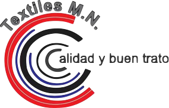

Textiles MN
Construcción del sitio textilesmn.com, manejo de redes sociales.
Textiles MN- Para Textiles MN se creo la pagina web, ademas de creación de sus catalogos de colores. También se manejan las redes sociales de la empresa.
Página